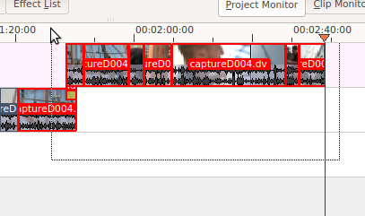
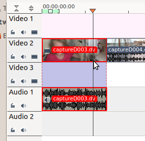
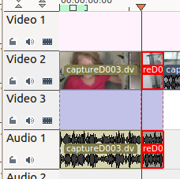

Grouping¶
Grouping clips allows you to lock clips together so that you can move them as a group and still retain their positions relative to each element in the group.
How to Group Clips¶
You can select multiple clips in preparation for grouping them by holding shift and clicking the mouse and dragging in the timeline.
To group the selected clips select or right-click the selected clips and choose .
Cutting Grouped Clips¶
Grouping is also useful if you have separate audio and video tracks and need to cut and splice both tracks at exactly the same point (e.g. for audio sync reasons).
If you cut the video clip using the editing when there is an audio clip grouped to it, then Kdenlive cuts the audio clip at the same point automatically.
 Removing Clip Grouping¶
To remove the grouping on clips, select the group of clips and choose .
FAQ¶
Q: How to delete sound track only?
A: Right-click on the clip and choose . The audio will move to an audio track but be grouped with the video track.
Right-click again and choose .
Then you can delete just the audio track.
Alternatively you can keep the audio in the clip and use the effect to just mute the soundtrack on the clip.
Yet another method is to select from the Clip Menu.